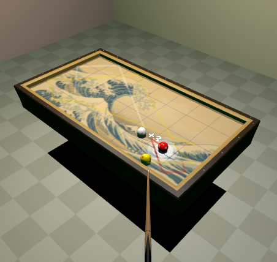

Amateur player runs 17 in three cushion
What would it be like as an amateur player to get a 17 run ? It is impossible, but here is how you can enjoy the feeling:

Snooker maximum clearance
Can an amateur player make a 147? It's impossible but the feeling is in reach.